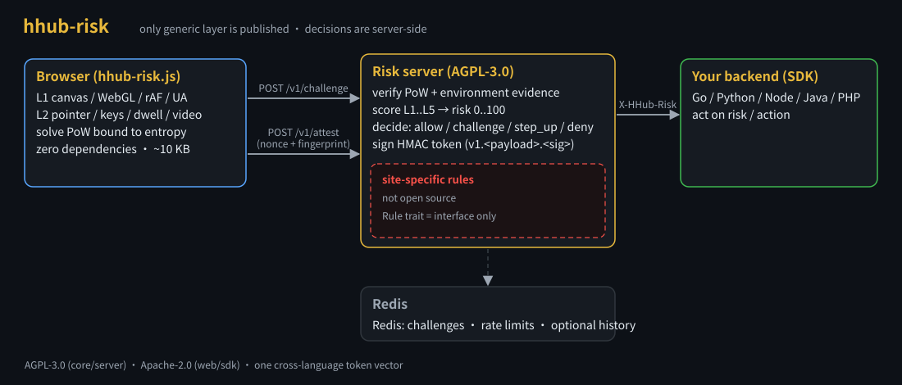

A risk layer for self-hosted social platforms
Not just another captcha: it puts browser attestation, behaviour scoring, IP/geo consistency and a pluggable captcha in one pipeline. Every decision is server-side; your data never leaves your server.
Browser attestation
canvas / WebGL / rAF timing + UA consistency; PoW bound to those signals — protocol clients don't get a challenge.
Behaviour scoring
pointer / touch / keys / dwell / corrections / video → 0–100; keyboard-only and mobile users are not punished.
Network & geo
IP country/city vs claimed timezone/language; only long-term contradictions add risk.
Account & session
new device, no primary session, private windows: email step-up before creating a master session.
White-box, still effective
- decisions are server-side; the client can only collect, never score;
- rule ids and thresholds are published and auditable — history and secrets are not;
- PoW is bound to browser entropy: a solved nonce cannot be replayed with another fingerprint.
Docs
License
Backend (core/, server/) is AGPL-3.0; frontend and SDKs are
Apache-2.0. Apache-2.0 is compatible with AGPLv3, and SDKs are independent HTTP clients.